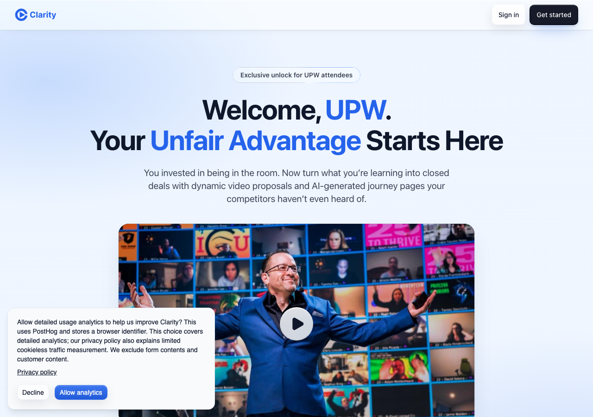

16 September 2026 · WIL-3378
Server conversion dashboards are configured and their live queries pass. Signup → page creation → payment uses server events independently of browser consent.
Cookieless acquisition is prepared but public collection remains disabled. PostHog admin access is required to enable vendor hashing, and an applicable EU consent basis has not been established. No claim of legal compliance or live hashing verification is made.
Deployed PR preview, using intercepted vendor requests and mock unauthenticated responses:
Local checks also verify auth timing, withdrawal, disabling queued sends, and deduplicated report calculations. CI passes.
Mock session only; no customer data.
